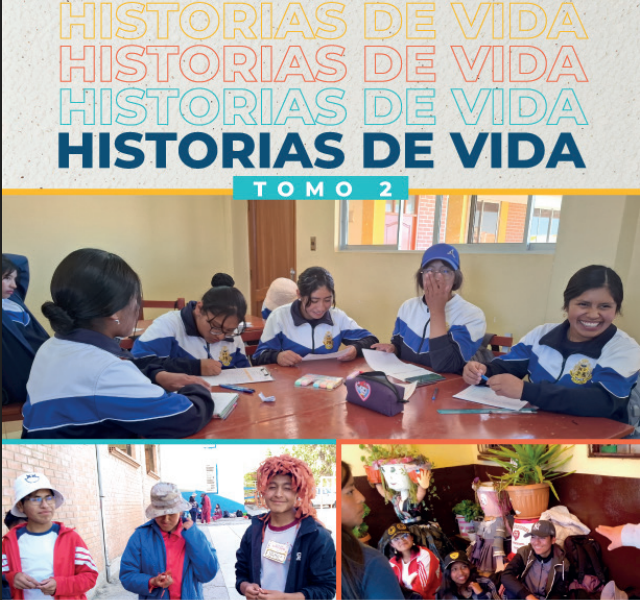
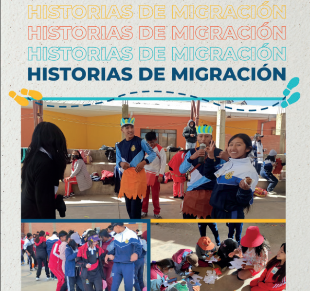

Tomo 1
Historias de Vida
Primer tomo de relatos testimoniales sobre procesos migratorios, acompañamiento y reconstrucción de proyectos de vida.

Publicaciones institucionales
Relatos que visibilizan las experiencias, desafíos, aprendizajes y esperanzas de personas migrantes acompañadas por el Servicio Jesuita a Migrantes.
Esta sección reúne los tomos de Historias de Vida, documentos que recogen voces, trayectorias y experiencias humanas vinculadas a la movilidad, la acogida y la integración.
Primer tomo de relatos testimoniales sobre procesos migratorios, acompañamiento y reconstrucción de proyectos de vida.

Segundo tomo con nuevas voces y experiencias que reflejan resiliencia, hospitalidad e integración en contextos de movilidad humana.

Tercer tomo de testimonios que fortalecen la memoria institucional y visibilizan la dignidad de las personas migrantes.